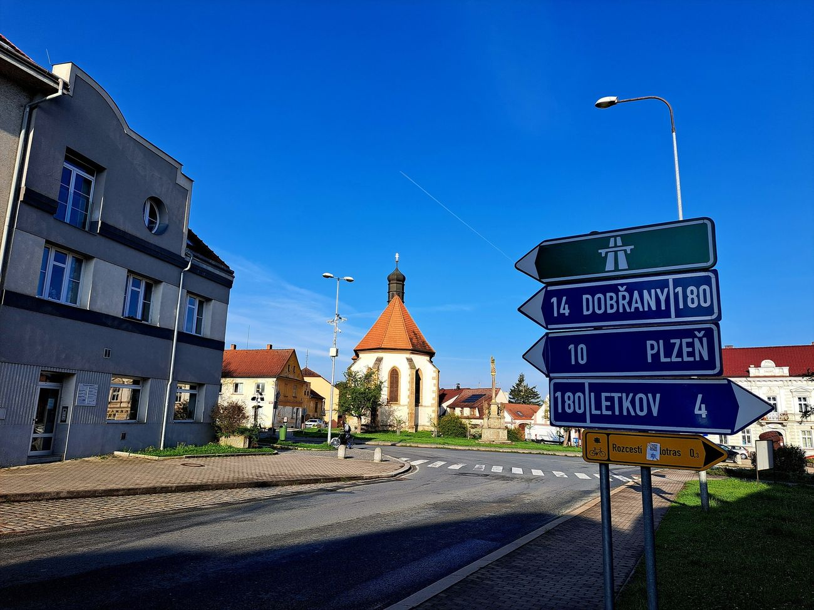
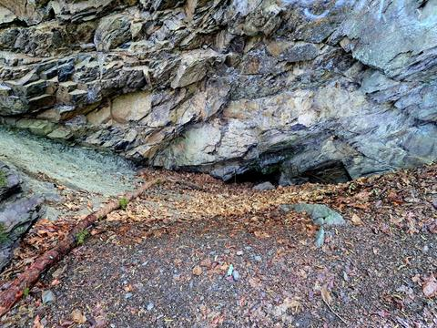
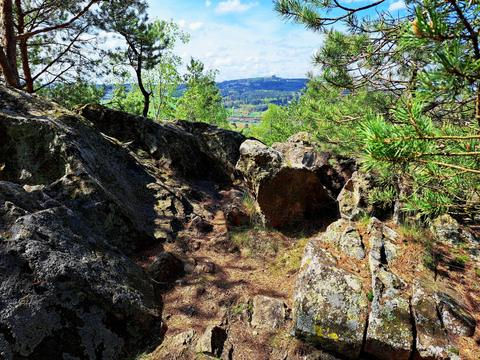

Pochod a putování
Plzenecká 50 (15 km)






#plzenecka50
Na webu jsou vybrané fotky. Všech 64 fotek z této potulky najdete na Facebooku BCT Survival.
Testovací verze. Administrace bude fungovat až na hostingu s PHP.
Pochod a putování



#plzenecka50
Na webu jsou vybrané fotky. Všech 64 fotek z této potulky najdete na Facebooku BCT Survival.